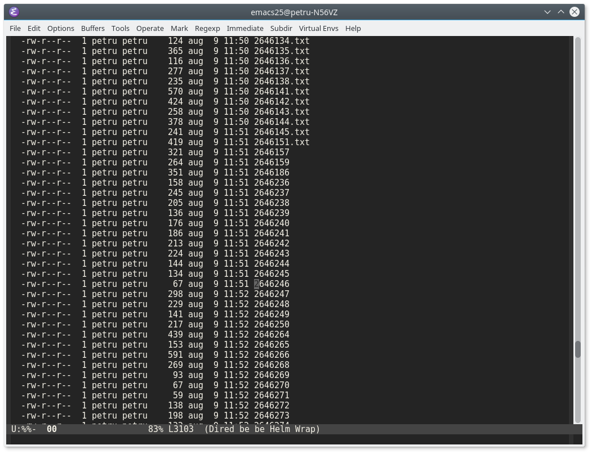

Rename multiple files with Emacs dired
| Petru Rebeja
While adding text files from within a folder to a project file I noticed that the files in the folder were lacking naming consistency. Namely, there were files which had the .txt extension and files without extension, as shown in the image below:

Since there were about 100 files without extension I started asking myself: Is there a way to add .txt extension to those files without manually renaming each one?
Of course there is. Here's what I did using Emacs and dired:
-
M-x diredto the desired directory (obviously) - In the
diredbuffer enter the edit mode withC-x C-q - Go to the last file that has extension before the block of files without extension.
- Starting from that file, place a mark and select the whole block of files without extension (the selection should include the last file with extension).
- Narrow to the selected region using
M-x narrow-to-regionorC-x n nThe buffer should look like the image below:
- Move to the beginning of buffer using
M-< - Start defining a new keyboard macro using
C-x (- Move to next line using
C-n - Navigate to the end of line using
C-e - Add the
.txtextension
- Move to next line using
- Save the macro with
C-x ) - Now that I have a macro to add
.txtextension to a file name I just need to run it as many times as there are unnamed files (100 in my case). To do so justC-u 100 F4. This will repeat the macro 100 times. - Once all the files are renamed exit the narrow-region using
M-x widenorC-x n w - Save changes with
C-c C-c
That's it!
Comments
Comments powered by Disqus